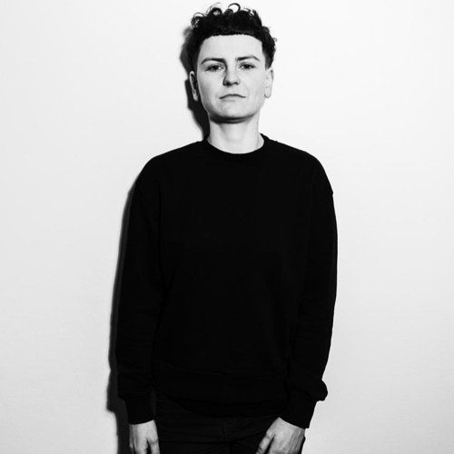
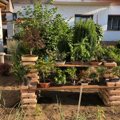

Do IT ve 48 letech. Jsem rád, i když to může skončit ze dne na den, říká Marcel
-

Adéla Pavlun - 9.11.2026

Marcel Mravec začal programovat už na základní škole, do IT se ale naplno pustil až o několik desítek let později. Po letech v rodinném podnikání se postupně propracoval k vývoji mobilních aplikací. Dnes působí jako iOS vývojář, vedle zaměstnání studuje na 42 Prague a otevřeně mluví o tom, jak náročné je hledat práci v době, kdy mají firmy z čeho vybírat a juniorům se dveře do oboru neotevírají snadno.
Jak dlouho ses pohyboval kolem počítačů, než ses naplno odhodlal pro tranzici do IT?
Už na základní škole jsem začal programovat v Basicu. Na gymplu, kde jsem byl v matematicko-fyzikální třídě, jsme měli informatiku každý rok a programovali jsme v Pascalu. Bavilo mě to, občas jsem dělal i něco navíc. Bohužel ne tolik, kolik bych mohl. Na vysokou školu jsem se na informatiku nedostal, tak jsem si vybral matematiku a ekonomii.
Na začátku kariéry jsem se snažil trochu programovat, ale pak nebyl čas. Věnoval jsem se jiné práci. Až před pěti lety jsem se rozhodl, že se do toho pořádně obuju. Děti už byly velké a já měl víc prostoru se učit. Každý den něco čtu, koukám na videa a programuji pro práci, pro školu i pro sebe.
Co jsi dělal předtím, než ses začal věnovat IT?
Po škole jsem nastoupil k rodičům do rodinné firmy, která provozovala lékárny. Později jsem pracoval také ve firmě, která se zabývala hostingem webů. Tam jsem dělal účetnictví a spravoval servery v Linuxu. Pak jsem se vrátil do rodinné firmy.
Kromě účetnictví jsem měl na starosti počítačovou síť a ze začátku jsem i stavěl počítače. Programování mě provázelo, i když jsem se mu profesně nevěnoval. V lékárně jsem si třeba vytvořil program na inventuru surovin.
Co tě nakonec přimělo ke změně?
Trochu mě postrčila manželka, když jsme oba pracovali v rodinné firmě. Ona chodila do zaměstnání a já zůstával doma, učil se programovat a vzdělával se. Rodinná firma se postupně změnila. Měli jsme dvě lékárny, jednu jsme pronajali a druhou zavřeli.
Když jsi byl doma, dělal jsi nějaké kurzy?
Začal jsem online kurzy, které jsem našel na internetu. Jel jsem jeden za druhým a zkoušel programovat vlastní programy. Nechtěl jsem jen sledovat videa, potřeboval jsem si věci sám vyzkoušet. Tak jsem začal posílat životopisy do firem. Poslal jsem asi tři a vzali mě. Bylo to rychlé.
Kam tě přijali?
Nastoupil jsem do Cleverlance, kde jsem poprvé pracoval jako iOS vývojář. Zůstal jsem tam jen čtyři měsíce. Potom mi trvalo dlouho najít další práci. Trh se změnil, začalo propouštění, firmy přestaly tolik nabírat juniory a do toho přišla AI. Dnes se často očekává, že už člověk bude mít alespoň rok praxe. Sehnat první práci je těžké.
Nakonec ses ale dostal do situace, kdy sis mohl vybírat mezi dvěma pracovními nabídkami. Jak se to seběhlo?
V březnu 2025 jsem se hlásil do Red Hatu na pozici Associate Quality Engineer, kde se pracovalo s C a Linuxem. To jsou technologie, kterým se věnuji i na 42 Prague, takže mi pozice dávala smysl. Prošel jsem několika koly pohovorů, dostal jsem domácí úkol a nakonec mi nabídli práci za šedesát tisíc hrubého, což byla na juniorní pozici opravdu luxusní nabídka.
Mezitím jsem se ale hlásil také do firmy Evolwings, která hledala iOS vývojáře. Absolvoval jsem pohovor a dostal domácí úkol, ve kterém jsem pracoval na projektu v Kotlin Multiplatform. Nakonec mi i oni nabídli místo.
Red Hat je známá firma a nabízel ti velmi dobré podmínky. Proč ses nakonec rozhodl pro Evolwings?
Bylo to docela dilema. Red Hat je super firma, kde bych se mohl naučit spoustu nových věcí. Nabízeli mi pozici Quality Engineera, kde bych pracoval s C a Linuxem. Na druhé straně tu byla Evolwings, kde bych mohl dělat iOS vývoj. Ten jsem vždycky chtěl dělat, baví mě, a navíc šlo o plně remote práci, což mi také vyhovuje.
Nakonec jsem se rozhodl pro Evolwings. Vzal jsem méně peněz, ale mohl jsem se věnovat tomu, co mě skutečně baví. Pro peníze to nedělám.
Jaké byly první dny v nové práci?
Hned jsem se zapojil do vývoje mobilní aplikace. Ze začátku se tím člověk samozřejmě trochu pomaleji prokousává, nicméně zájem mě žene vpřed. Baví mě to.
Vedle práce studuješ na 42 Prague. Jak ses tam dostal?
Začínal jsem čtyřtýdenním kurzem v C, do kterého si vybírali studenty. Od té doby tam studuji už přes dva roky.
Můžeš popsat, jak to funguje?
Je to škola bez učitelů, všechno běží na bázi projektů. Projekty kontrolují ostatní studenti nebo počítač. Když něco nevíš, ptáš se ostatních. Člověk se tak učí nejen programovat, ale také spolupracovat. Zaměřujeme se na C, C++, Linux, Docker a další věci. Jsou tam i skupinové projekty. Body získáváš mimo jiné tím, že hodnotíš projekty ostatních. Díky tomu vidíš, jak nad věcmi přemýšlejí, a můžeš se s nimi o řešení pobavit.
Platíš si studium sám?
Studenti to neplatí. Funguje to tak, že školu podporují firmy, které mají zájem o studenty. V Praze je to třeba Škoda Auto nebo ČSOB. Dostat se tam můžeš přes test logického uvažování a potom následuje úvodní intenzivní období. Během něj musíš ukázat, že na to máš. Není to tak, že by automaticky pokračoval každý, kdo začne.
Na jak dlouho je to studium?
Záleží na tom, kam až chce člověk dojít. Já už mám dokončenou základní část studia, které se říká Common Core. Na jejím konci jsem složil závěrečnou zkoušku, dostal potvrzení o absolvování a měli jsme také setkání se sponzory školy.
Ve studiu ale pokračuji dál v takzvaném Advanced Core. Projekty jsou náročnější a často na nich pracuje více studentů společně. Podmínkou pro dokončení je také praxe. Podle toho, jaké další projekty člověk absolvuje, může získat francouzskou profesní kvalifikaci RNCP úrovně 6 nebo 7, které zhruba odpovídají bakalářskému a magisterskému stupni vzdělání.
Na dokončení mám celkem čtyři a půl roku. Já ale nikam nespěchám. Pokračuji hlavně proto, že mě studium pořád posouvá a učím se díky němu nové věci.
Jak se díváš na svou pozici na trhu práce s dosavadními zkušenostmi?
Když se podívám, kolik lidí v Česku hledá práci, nejsem si jistý, jestli by mi moje dosavadní praxe stačila, abych se snadno uplatnil někde jinde. Nedávno jsem se znovu zkoušel hlásit do Red Hatu na pozici, kde se pracovalo s C. To se učím ve škole, takže by mi to vyhovovalo. Tentokrát mě ale dál nepozvali.
Jsem rád, že mám práci a nemusím teď nic akutně řešit. I u nás je ale vidět, že práce ubývá. Kolegové, kteří s námi pracují externě, mají také problém najít další zakázky, přestože mají třeba víc zkušeností než já.
Čím myslíš, že to je, že je práce míň?
Jednoduché by bylo říct, že za to může AI, ale to není odpověď na všechno. Dřív firmy snáz hledaly odbyt pro své projekty. Dnes je složitější najít firmu, která skutečně potřebuje aplikaci.
Aplikací je spousta. Dřív si někdo nechal vytvořit mobilní aplikaci, protože na to měl peníze a chtěl něco moderního. Nakonec se ale ukázalo, že mu stačí webová stránka. Lidí, kteří opravdu potřebují vlastní aplikaci, je podle mě méně, než se zdá.
Je zajímavé, že takto otevřeně říkáš, že ses hlásil do Red Hatu.
Občas něco zkusím, abych věděl, jak na tom jsem. Nehledám teď aktivně novou práci, ale chci mít přehled o tom, jaké jsou možnosti.
Jsem OSVČ a práce může skončit ze dne na den. Člověk musí být připravený na různé situace. Hlásit se jinam je navíc dobrá zkušenost samo o sobě, i když to nakonec nevyjde. Je to o nabídce, o momentální situaci a také o tom, jestli by mi změna dávala smysl.
Kdy ti do cesty vstoupilo junior.guru?
Před mojí první prací v IT. Tehdy jsem se tam hodně ptal. Dnes už méně, ale pořád členství platím. Nutně ho pro sebe nepotřebuju tolik jako dřív, ale chci, aby komunita fungovala dál.
Jak ti junior.guru pomohlo na začátku?
Hodně. Člověk se musí nejdřív odhodlat k tomu, aby vůbec poslal životopis. Potřebuje zjistit, jestli je jeho CV v pořádku a odpovídá tomu, co se dnes očekává. Bez junior.guru by to pro mě bylo složitější. Možná bych se k tomu tak rychle nedokopal a pak už mohlo být pozdě.
Co ti komunita kolem junior.guru přinesla?
Je to zdroj informací a pomoci. Když jsem měl problém s algoritmem nebo jsem si nevěděl rady s úkolem, mohl jsem se zeptat. Někdy stačí otázku správně zformulovat a člověk na řešení přijde sám. I to mi často pomohlo.
Co dalšího ti při přechodu do IT pomohlo?
Kurzy, placené i neplacené. Nejdůležitější ale podle mě je, že člověk opravdu něco dělá. Nestačí jen koukat na videa. Je potřeba programovat, vytvářet vlastní věci a postupně na nich pracovat. Projekty se pak dají ukázat při hledání práce.
Vytvořil sis také vlastní projekt?
Udělal jsem mobilní aplikaci, která umožňuje vyplnit formulář o nehodě. Ještě ji nemám úplně dotaženou, ale rozhodně si myslím, že má smysl vlastní projekt vytvořit.
Doporučil bys něco konkrétního lidem, kteří se chtějí věnovat iOS vývoji?
Hodně mi pomohl kurz 100 Days of Swift. Je zaměřený na lidi, kteří se učí Swift a vývoj pro zařízení Apple.

Programování je dobrá věc i do důchodu. Člověk nezakrní.
Co bys doporučil těm, kteří se snaží zorientovat na trhu a získat první práci?
Nejlepší je mít vlastní projekt, který člověka baví. K tomu si připravit životopis a nechat si ho zkontrolovat třeba na junior.guru. Člověk by se neměl bát posílat životopisy. Když ho odmítnou, nic to samo o sobě neznamená. Je potřeba zkoušet dál, protože konkurence je obrovská.
Když jsem se hlásil do Red Hatu, věděl jsem, že tam bude velká konkurence. Kousek od něj je VUT, kde studuje informatiku spousta lidí. Každý rok přibývají další a řada z nich by tam chtěla pracovat. Člověk musí zkoušet různé možnosti a nabídnout také něco jiného než jen technické dovednosti.
Co může být výhodou člověka, který přichází z jiného oboru?
Já mám ekonomické vzdělání a zkušenosti z podnikání. K tomu vlastní projekty. Člověk by měl přemýšlet, co dalšího může nabídnout a čím se odlišuje.
Myslíš, že je těžší přejít do IT ve vyšším věku?
Nebál bych se toho, ale zároveň bych nepřeceňoval, jak jednoduché to bude. Nejsem nejmladší a nevím, jak ochotně firmy přijímají starší lidi. Každopádně bych se toho nebál a zkusil to.
Co tě na programování baví?
Vždycky mě bavilo řešit problémy a hádanky. Programování mě baví, a myslím, že je to dobrá věc i do důchodu. Člověk nezakrní.
Kam by ses chtěl profesně posunout?
Chci, aby mi to šlo lépe a abych byl lépe ohodnocený. Mám však hodně různých zájmů. Baví mě C, C++, iOS i Kotlin a někdy nevím, na co se zaměřit dřív. Jsem rozlítaný do všech stran. Když se člověk rozhodne pro jeden směr, může mít pocit, že si zavírá dveře k ostatním. Na druhou stranu i nabídky práce často vyžadují znalost více technologií.
Vidíš svou budoucnost hlavně ve vývoji mobilních aplikací?
Ano, to mě baví a vidím v tom smysl. Zajímají mě i jiné věci, třeba vývoj her, ale tolik nabídek na to nevidím.
Jak ti vyhovuje práce na dálku?
Jsme malý tým, čtyři lidé. Vyhovuje mi pracovat samostatně. Někdy je dobré se někoho zeptat, ale na to mi stačí Discord. Je skvělé, že můžu pracovat odkudkoliv. Zkoušel jsem pracovat z chaty a šlo to dobře. Když někam jedu, vezmu si notebook s sebou a můžu něco udělat.
Ve firmě mám volnost. Někdy pracuju čtyři hodiny, jindy šest nebo osm, podle toho, jak to vychází. Nic mě nenutí sedět u práce určitý počet hodin.
Když se ohlédneš, co bys vzkázal mladší verzi sebe sama?
Mohl jsem si najít prostor a začít dřív. Bylo by to lepší. Ale rozhodl jsem se do toho pustit a neustrnul jsem. To je důležité.
Máš otázky? Chceš probrat kariérní změnu do IT?
Na junior.guru Discordu si pomáhá 195 lidí, které zajímá svět IT juniorů. Začátečníci, kteří hledají komunitu a podporu. Senioři s chutí sdílet své zkušenosti. K tomu pravidelné online akce a mnoho dalšího.
